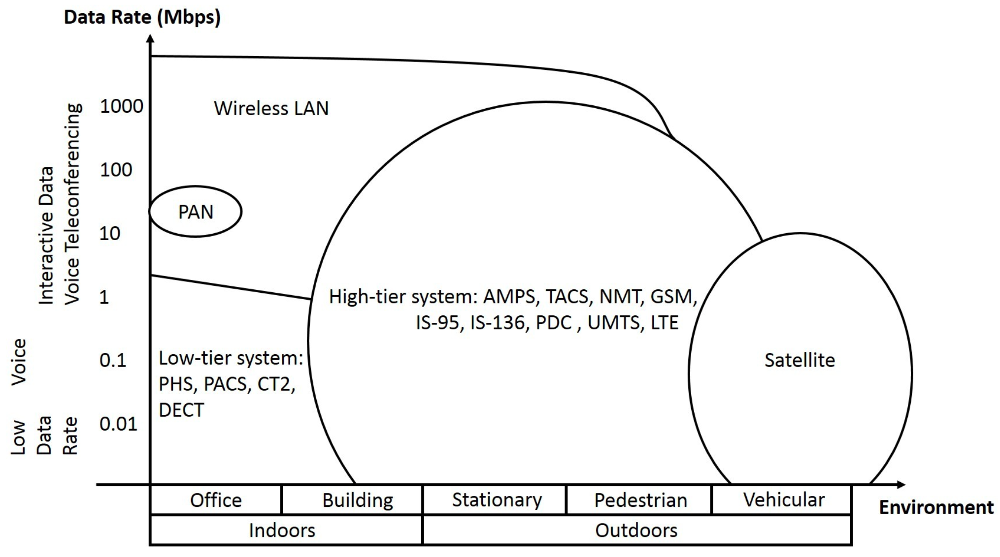
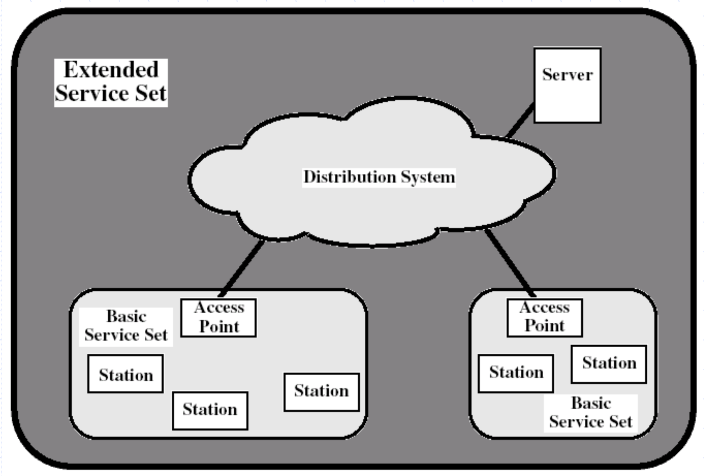
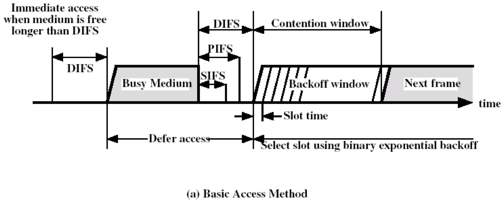
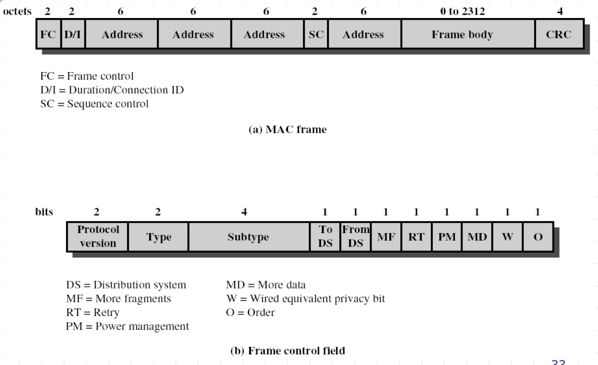

Wireless Technologies

- PAN : Personal Area Network
- safe, short distence transmition.
- Bluetooth, credit card.
- Wifi 不支援高速移動
- 來不及handoff
802.11
- By IEEE in 1990
- MAC protocol and physical medium specifiaction
- Architecture
- BBS: basic service set
- STA: station
- AP(Access point)
- functions as a bridge (Wifi 分享器)
- defined in second layer.
- IBSS: independent BSS(ad hoc/peer-to-peer mode)
- ESS: extend service set
Family
- 802.11
- 802.11b
- 2.4 GHz
- Same bandwith as 802.11 DSSS PHY
- Complementary Code Keying (CCK)
- Backward compatible
- Data rate up to 11 Mbps.
- With fallback rates of 5, 2, 1 Mbps
- 802.11a
- Uses 5 GHz frequency band. (Since the interference at 2.4 GHz)
- 802.11a and 802.11b are not compatible
- Not license-free in every country
- Orthogonal Frequency Division multiplexing (OFDM)
- Data rate up to 54 Mbps.
- With fallback rates 48, 36, 24, 18, 12, 9, 6 Mbps.
- Uses 5 GHz frequency band. (Since the interference at 2.4 GHz)
- 802.11g
- Enhance the 2.4 GHz 802.11b
- compatible with 802.11b
- OFDM
- PBCC is considered as an alternative.
- 20 Mbps
- Potentially up to 54 Mbps ans beyond.
- Enhance the 2.4 GHz 802.11b
- 802.11n
- Improving 802.11a and 802.11g
- 54 Mbps to 600 Mbps
- Adding Multiple-input Multiple-Output antennas and many other newer features.
- Improving 802.11a and 802.11g
- 802.11e
- MAC enhancement for quality-of-serivce (QoS) (優先級)
- Enhanced Distrubuted Channel Access (EDCA)
- Enhance DCF
- Four distinct access categories.
- Transmission Opportunity(TXOP): the maximum period that allow continously transmit without contending channel.
- Contention window size relies QoS.
- Start a backoff period after AIFS, which is equal to or larger than DIFS.
- 802.11f
- To assure the interoperability of APs.
- IAPP (Inter Access Point Protocol)
- Standardizes the handoff information of a multi-vendor WLAN network.
- Promises mobility among 802.11 WLAN network.
IBSS configuration
- Independent (ad hoc)
- Direct communication
- One BBS (basic service set)
- Infrastructure
- AP and stations
- Distrubution System
- Multiple BSS connected together form an ESS.
- Allow mobile stations to access fixed resourse.
- Advantage: stable.
- Disadvantage: transmit path will be long.
| Ad Hoc | Infrastructure |
|---|---|
 |
 |
Extend Service Set

Protocol Enities

- Station Management
- Interact with physical and MAC management.
- PHY Management
- Channel tuning
- Physical-layer MIB(Management Information Base)
- PMD (Physical Medium Dependent Sublayer)
- Modulation and encoding
- PLCP
- SAP
- Functino for carrier sense (slear channel assessment)
- MAC management
- synchronization
- Power management
- Roaming
- MIB
- MAC entity
- Basic accss mechanism
- Fragmentation
- Encryption
Services
- Association: initial association between a station and an AP.
- Reassociation: transferred from one access point to another.
- Disassociation: a notification from either a station or and AP that an existing association is terminated.
- Authentication: establish the identity of stations
- shared key or proprietary authentication extensions
- Privacy - encript
- station-to-station, not “end to end”.
- WEP(Wired Equivalent Privacy) embedded in the MAC entity. (It’s not safe now)
- Only payload of data frames are encrypted.
MAC
- One MAC protocol supporting multiple physical layers
- DCF (Distributed Coordination Function)
- a contention algorithm
- PCF (Point Coordination Function)
- a centralized algorithm providing contention-free service (polling) (optional)
- reside in AP
- Now seldom use.
Inter Frame Space (IFS)
- SIFS (short inter frame space)
- The minimum delay.
- PIFS (PCF IFS)
- DIFS (DCF IFS)

SIFS = (RF delay) + (PLCP delay) + (MAC delay) + (Transceiver delay)
Slot time = (RF delay) + (PLCP delay) + (Clear channel assessment time) + (Transceiver delay)
PIFS = SIFS + 1 Slot time
DIFS = SIFS + 2 Slot time
Values
| SIFS | Slot time | |
|---|---|---|
| DSSS | 10 μs | 20 μs |
| FHSS | 28 μs | 50 μs |
| DFIR | 7 μs | 8 μs |
DCF
- Collision detection is not practical
- Requrie receive and transmit at same time.
- Receiver will collide with transmitter.
- Cost is high for a transceiver can receive and transmit at same time.
- CSMA/CA (collision Avoidance)
- Carrier sence function in PHY called CCA (Clear Channel Assessment)
CSMA/CA + ACK Prorocol
CSMA/CA
- Access when medium is senced free longer than DIFS, otherwise defer and backoff.
- Continue to listen up to backoff interval.
- Transmit if medium is free.
- Suspend if medium is busy at any time.
- When the medium is sensed idle greater than DIFS again, it continues the backoff procedure.
- After a success transmition, wait a contention window to avoid a certain station occupy channel.

ACK
- Only used in unicast.
- When CRC is correct receiver return ack to let transmitter know that packet is received.
- If no ack received, transmitter will retransmit after a random backoff.
- Backoff interval is increased exponentially up to a certain threshold.

Virtual Sensing
- Used to avoid hidden terminal.
- RTS: request-to-send
- CTS: clear-to-send; grant the requestion node permission to transmit.
- Contain a duration field that defines the period of time the medium is to be reserved.
- NAV(Net Allocation Vector)
- Cannot send transmit if no CTS senced.
- Unicast only
- RTS threshold
- When the RTS, CTS is too big compare to data, transmit directly.
- Since the collision cost is similar to the cost of RTS, CTS.
Frame Format

Scanning
- Initial setup
- Infrastructure: finding a network
- Ad hoc: finding a IBSS
- Roaming
- Finding a new AP
- Passive Scanning
- simply by listening for beacons
- Active Scanning
- send a probe, then wait for a probe response
- Both beacon and probe response contain information necessary to join a new network.
Roaming
- A station start to find other AP when the link with current AP is poor.
- Station sends reassociation request to new AP.
- When the link with new AP is Strong enough, change to the new AP.
- If change to new AP when the link is stronger then current one, “Ping Pong effect” might occur.
- That is repeatly changing AP since the strengh between two AP is similar.
Power Management
- Allow idle stations go to sleep mode.
- AP buffers packets for sleeping stations
- Traffic Indication Map(TIM) is sent with every beacon.
- TIM announces which station have packets buffered.
- Power saving station wake up periodically.
- Listen for beacon
Spectrum
Unlicensedd spread spectrum in US by FCC(Federal Communications Commission)
- 915 MHz
- 2.4 GHz
- 5.8 GHz
Wi-Fi Certification
- Wi-Fi Alliance
Other WLANs
- HIPERLAN (High Performance Radio LAN)
- By ETSI
- MMAC (Multimedia Mobile Access Communication)
- In Japan